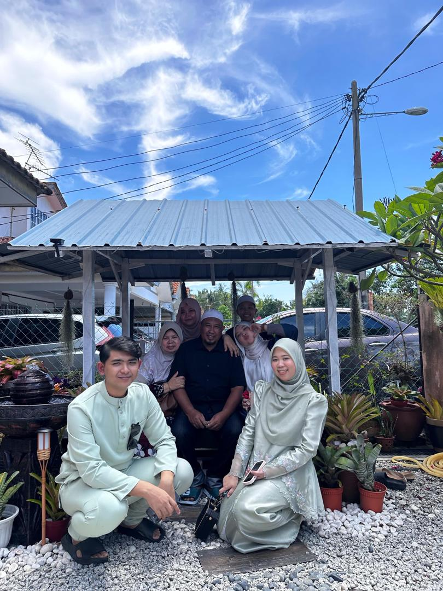
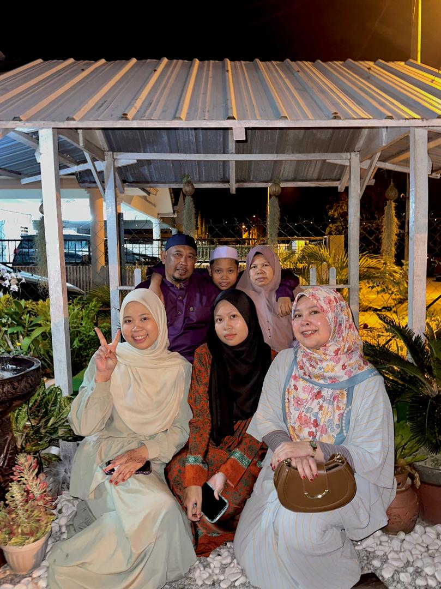
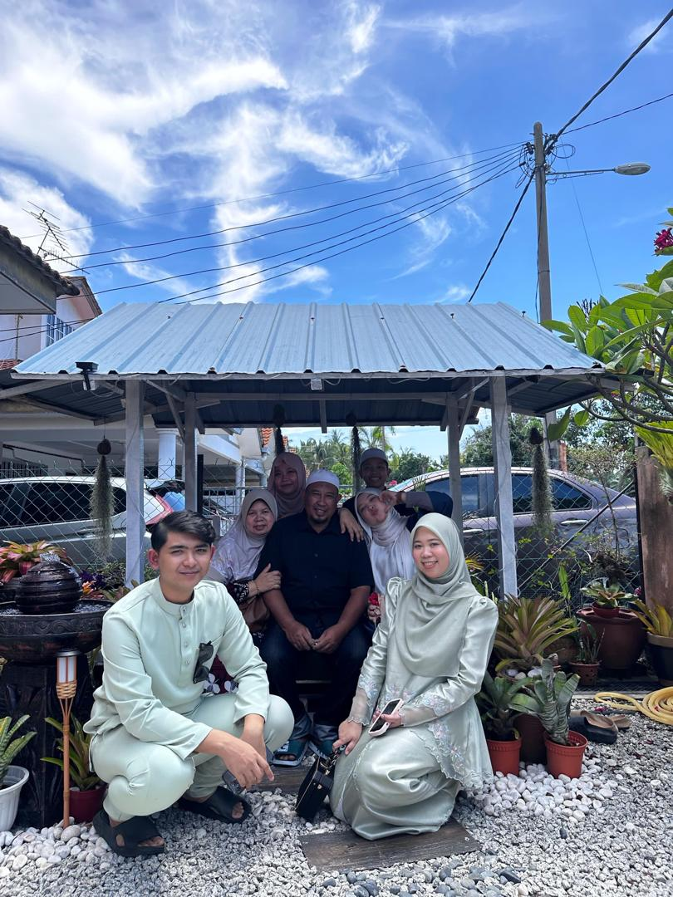
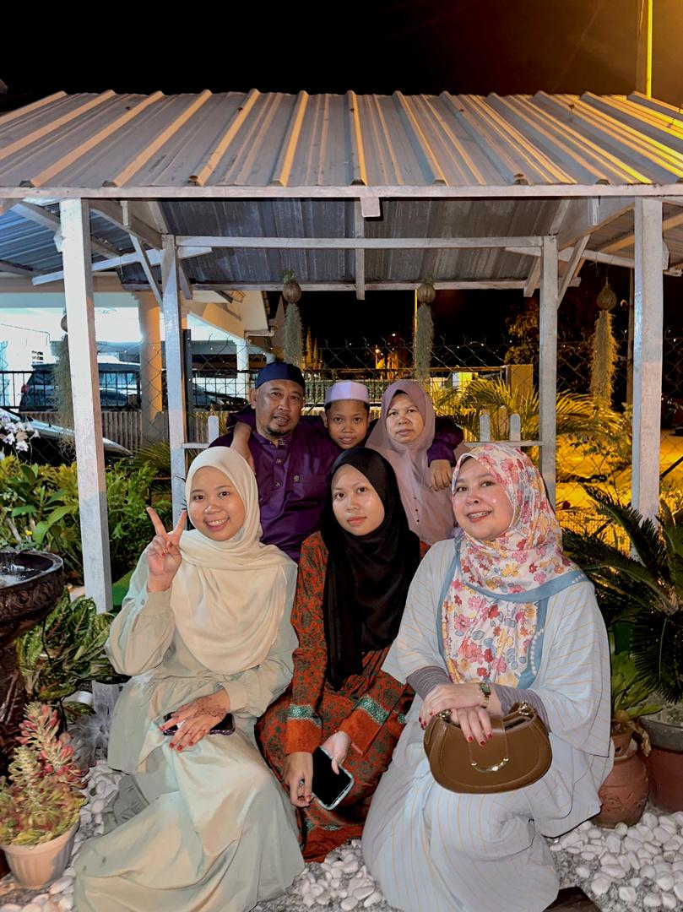

MEET MY FAMILY MEMBERS
MY DAD
NOR HALIM BIN SAIRI
26 MARCH 1967
My father is a businessman who works hard to support our family. He is a very responsible and determined person, and his dedication to his work has inspired me to be independent and disciplined. From him, I learned the importance of perseverance, commitment, and never giving up when facing challenges in life.

MY MOM
HANIZA BINTI ISHAK
4 OCTOBER 1969
My mother is a full-time housewife who plays an important role in managing our household. She is caring, patient, and always puts her family first. Her love and sacrifices have taught me the value of kindness, gratitude, and emotional strength. She is also my biggest source of comfort and motivation.

MY ELDEST SISTER
NUR FATIHAH ATIRA BIN NOR HALIM
15 SEPTEMBER 1996
My eldest sister, Nur Fatihah Atira, is a mature and responsible individual who serves as a role model for me. Her independence and dedication to her own life inspire me to be more confident and focused on my goals. I often look up to her for guidance and motivation.

MY SECOND SISTER + MY BROTHER IN LAW
NUR ELLYA SYAHIDA BINTI NOR HALIM + MUHAMMAD ARIEF HAIQAL BIN SAHARRUDIN
28 MEI 2000 + 18 JUNE 2001
My second sister, Nur Ellya Syahida, is married and a loving mother to her daughter. She tied the knot with Muhammad Arief Haiqal on 2 December 2023 and welcomed their first child, my niece, Nur Ayra Areesa binti Muhammad Arief Haiqal, on 19 November 2024. She is caring and family-oriented, and she has shown me the importance of responsibility and balancing personal and family life. Her journey has inspired me to be more mature and prepared for the future.

THIRD CHILD (ME)
NUR ELLYANA NATASHA BINTI NOR HALIM
20 MARCH 2005
YOUNGEST BROTHER
MUHAMMAD AZAM SYAZWAN BIN NOR HALIM
1 OCTOBER 2010
My younger brother, Muhammad Azam Syazwan, is currently a student. He is energetic and cheerful, and despite our age difference, we share a close relationship. I try to be a good role model for him and support him in his studies and daily life.